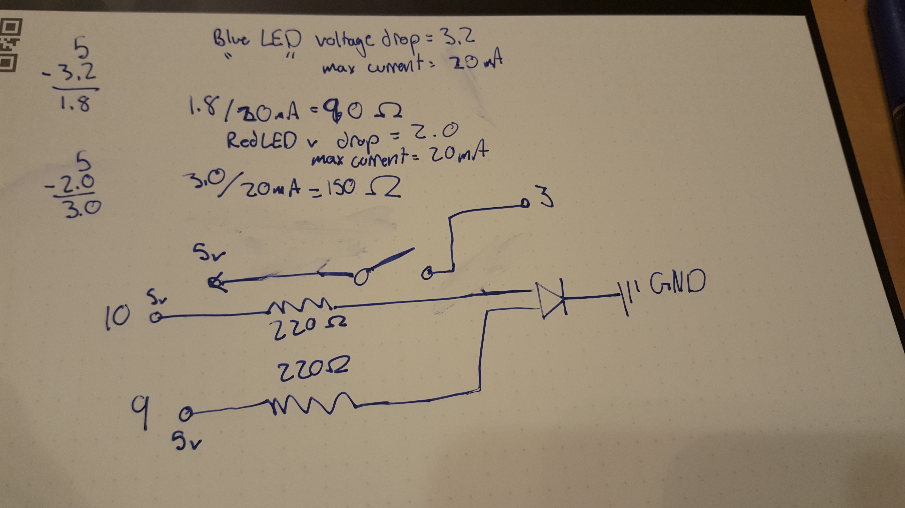

IT FADES!

Here is all the documentation for assignment 1
Here's my code
The premise of this circuit is to have one part of an RGB LED set to a fade cycle with one other color at a constant brightness to mix colors together with a fade effect. By pressing the button the constant color is turned off for the next cycle.
The circuit schematic and resistor calculation. I decided to use 220 ohm resistors for both bulbs given the values of the calculations these were well within the safe range. The circuit supports switching LED's withthis configuration as well. ie the blue bulb could be set to fade and the circuit wouldnt break.
A picture of the Circuit